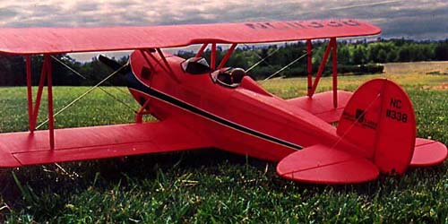

Flyline Great Lakes Trainer

|
I built this model from the old Flyline kit in the early 1990's. Its traditional stick and stringer construction is light weight, looks great and is not as tedious as many believe. Actually, I expect I took more time cutting out the very high quality print wood, than actually framing it up. As with any scale model, many more hours go into detailing. This model has functional louvers in the cowl for engine cooling, sprung landing gear, wire rigging, laced cockpit combing, and instrument panels.
I originally set this model up with a .15 two-stroke glow engine and it proved to be more than enough power. Getting out of the grass strip shown was not a problem at all. It weighed 46 oz. without fuel in this configuration, with 4 Futaba S-133's and a 275 ma pack for full house control. Unfortunately I was never able to keep the engine running consistently due to insufficient cooling or fuel foaming, and so I only flew it a few times before moving on to other projects. Jump ahead almost 20 years and I decided to revisit the Great Lakes Trainer as a possible candidate for an electric conversion. Stripping, cleaning and weighing suggested that I could even save a few ounces. I replaced the glow engine with a generic 250-watt brushless outrunner with a Castle Creations Phoenix 35 and the radio gear with three Hitec HS-65HB servos and a Futaba R617FS 2.4GHz receiver. My battery of choice is a Thunder Power 3S 2600mAh Li-Poly pack tucked in the cowl right behind the motor. All up weight is now 4-5 ounces less than before and the Great Lakes Trainer flies great. |
| These in-flight photos were taken by a good friend at the NEAT Fair in September 2010 and are the first that finally show it in its element. Yes, the rigging was rather incomplete for these flights and has since been restored. |

Copyright 2000-2010, Thayer Syme. All rights reserved